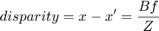
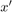
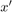
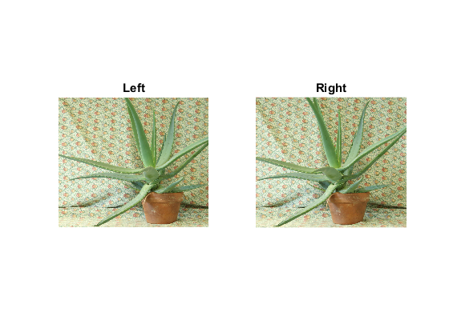
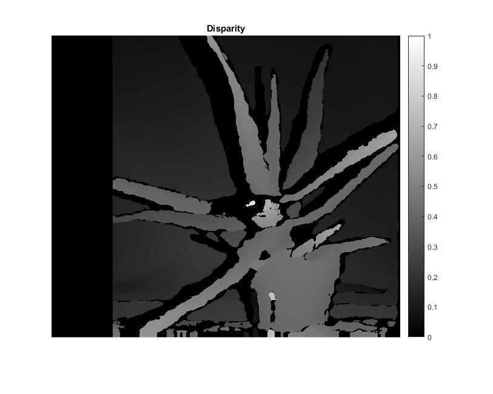
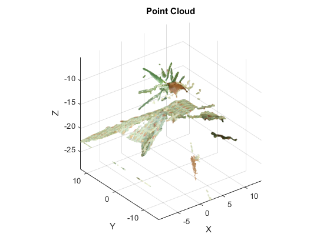

Stereo Image Matching
Example of stereo image matching to produce a disparity map and point cloud generation.
Resulting .ply file can also be viewed using MeshLab.
Sources:
- https://github.com/opencv/opencv/blob/3.2.0/samples/python/stereo_match.py
- https://github.com/opencv/opencv/blob/3.2.0/samples/cpp/stereo_match.cpp
- https://github.com/opencv/opencv/blob/3.2.0/samples/gpu/stereo_match.cpp
- https://github.com/opencv/opencv/blob/3.2.0/samples/cpp/tutorial_code/calib3d/stereoBM/SBM_Sample.cpp
- https://docs.opencv.org/3.2.0/dd/d53/tutorial_py_depthmap.html
Contents
Theory
Previously, we saw basic concepts like epipolar constraints and other related terms. We also saw that if we have two images of same scene, we can get depth information from that in an intuitive way. Below is an image and some simple mathematical formulas which prove that intuition:

The above diagram contains equivalent triangles. Writing their equivalent equations will yield us following result:

 and  are the distance between points in image plane corresponding to the scene point 3D and their camera center.
and  are the distance between points in image plane corresponding to the scene point 3D and their camera center.  is the distance between two cameras (which we know) and
is the distance between two cameras (which we know) and  is the focal length of camera (already known). So in short, the above equation says that the depth of a point in a scene
is inversely proportional to the difference in distance of corresponding image points and their camera centers. So with this
information, we can derive the depth of all pixels in an image.
is the focal length of camera (already known). So in short, the above equation says that the depth of a point in a scene
is inversely proportional to the difference in distance of corresponding image points and their camera centers. So with this
information, we can derive the depth of all pixels in an image.
So it finds corresponding matches between two images. We have already seen how epiline constraint make this operation faster and accurate. Once it finds matches, it finds the disparity.
Code
function stereo_match_demo()Images
load pair of images (SGBM works with either grayscale or color images, BM only grayscale)
imgL = cv.imread(fullfile(mexopencv.root(),'test','aloeL.jpg'), 'Color',true); imgR = cv.imread(fullfile(mexopencv.root(),'test','aloeR.jpg'), 'Color',true); subplot(121), imshow(imgL), title('Left') subplot(122), imshow(imgR), title('Right')
downscale for faster processing
scale = 0.5;
[imgL, imgR] = scale_images(imgL, imgR, scale);
whos imgL imgR
[h,w,cn] = size(imgL);disparity-to-depth mapping 4x4 matrix, used to compute point cloud
if true % manually enter Q matrix % (turns points 180 deg around x-axis, so that y-axis looks up) f = 0.8*w; % guess for local length Q = [1 0 0 -0.5*w; 0 -1 0 0.5*h; 0 0 0 -f; 0 0 1 0]; elseif false % images must be rectified, if not we rectify and get Q matrix % (requires calibrated stereo camera, see stereo_calibration_demo.m) intrinsicFile = fullfile(tempdir(), 'stereo_intrinsic.yml'); extrinsicFile = fullfile(tempdir(), 'stereo_extrinsic.yml'); [imgL, imgR, Q] = rectify_images(imgL, imgR, scale, ... intrinsicFile, extrinsicFile); else % when empty, point cloud generation is skipped Q = []; end display(Q)
Q =
1.0000 0 0 -320.5000
0 -1.0000 0 277.5000
0 0 0 -512.8000
0 0 1.0000 0
Stereo Matching
create stereo matcher, with params tuned for 'aloe' image pair
win_size = 3;
min_disp = 16; % 0
num_disp = 112 - min_disp; % fix(w/8) + 15
num_disp = double(bitand(int32(num_disp), int32(-16))); % divisible by 16
stereo = cv.StereoSGBM('MinDisparity',min_disp, 'NumDisparities',num_disp, ...
'BlockSize',16, 'P1',8*cn*win_size^2, 'P2',32*cn*win_size^2, ...
'Disp12MaxDiff',1, 'UniquenessRatio',10, ...
'SpeckleWindowSize',100, 'SpeckleRange',32, 'Mode','SGBM');
display(stereo)stereo =
StereoSGBM with properties:
id: 2
MinDisparity: 16
NumDisparities: 96
BlockSize: 16
SpeckleWindowSize: 100
SpeckleRange: 32
Disp12MaxDiff: 1
PreFilterCap: 0
UniquenessRatio: 10
P1: 216
P2: 864
Mode: 'SGBM'
compute disparity map (from a pair of rectified stereo images)
tic, D = stereo.compute(imgL, imgR); toc
fprintf('16-bit disparity map: min=%d, max=%d\n', min(D(:)), max(D(:)));
D = single(D) / 16; % fixed-point numbers with 4 fractional bits -> float
DD = (D - stereo.MinDisparity) / stereo.NumDisparities; % normalized [0,1]
figure, imshow(DD), colorbar, title('Disparity')Elapsed time is 0.165371 seconds. 16-bit disparity map: min=240, max=1631
Point Cloud
if ~isempty(Q) % generate 3d point cloud ptc = create_point_cloud(D, Q, imgL, false); fprintf('%d point cloud\n', ptc.Count); % write point cloud to PLY file plyfile = fullfile(tempdir(), 'aloe.ply'); write_point_cloud(ptc, plyfile); fprintf('Point cloud saved to: %s\n', plyfile); % visualize point cloud if ~mexopencv.isOctave() %HACK: Octave hangs if we plot too many scatter points figure, vis_point_cloud(ptc); title('Point Cloud'); xlabel('X'); ylabel('Y'); zlabel('Z'); %axis([-10 10 -10 10 -20 0]) end end
228950 point cloud Point cloud saved to: C:\Users\Amro\AppData\Local\Temp\aloe.ply
endHelper functions
function [imgL, imgR] = scale_images(imgL, imgR, scale) if scale ~= 1 if scale < 1 interpo = 'Area'; else interpo = 'Cubic'; end imgL = cv.resize(imgL, scale, scale, 'Interpolation',interpo); imgR = cv.resize(imgR, scale, scale, 'Interpolation',interpo); end end function [imgL, imgR, Q] = rectify_images(imgL, imgR, scale, intrinsicFile, extrinsicFile) % load params from previously calibrated stereo camera assert(exist(intrinsicFile, 'file') == 2, 'missing intrinsic params'); assert(exist(extrinsicFile, 'file') == 2, 'missing extrinsic params'); I = cv.FileStorage(intrinsicFile); % intrinsic: M1, D1, M2, D2 E = cv.FileStorage(extrinsicFile); % extrinsic: R, T % account for new image size by scaling camera matrix: fx, fy, cx, cy I.M1 = I.M1 * scale; I.M2 = I.M2 * scale; % Note: we assume that cameras were calibrated using images of same size % as the original image size here, i.e: [I.width, I.height] == sz/scale) sz = [size(imgL,2) size(imgL,1)]; % re-rectify using scaled image size RCT = cv.stereoRectify(I.M1, I.D1, I.M2, I.D2, sz, E.R, E.T); Q = RCT.Q; % apply rectification [map11, map12] = cv.initUndistortRectifyMap(I.M1, I.D1, sz, ... 'P',RCT.P1, 'R',RCT.R1); [map21, map22] = cv.initUndistortRectifyMap(I.M2, I.D2, sz, ... 'P',RCT.P2, 'R',RCT.R2); imgL = cv.remap(imgL, map11, map12, 'Interpolation','Linear'); imgR = cv.remap(imgR, map21, map22, 'Interpolation','Linear'); end function ptc = create_point_cloud(D, Q, imgL, cvst) xyz = cv.reprojectImageTo3D(D, Q); mask = repmat(D > min(D(:)), [1 1 3]); % where disparity was not computed xyz = reshape(xyz(mask), [], 3); if size(imgL,3) == 3 clr = reshape(imgL(mask), [], 3); else clr = repmat(imgL(mask(:,:,1)), 1, 3); end if nargin < 4, cvst = true; end if cvst && ~mexopencv.isOctave() && mexopencv.require('vision') ptc = pointCloud(xyz, 'Color',clr); else %HACK: pointCloud and related functions are not implemented in Octave ptc = struct('Location',xyz, 'Color',clr, 'Count',size(xyz,1)); end end function vis_point_cloud(ptc) if isobject(ptc) pcshow(ptc); else scatter3(ptc.Location(:,1), ptc.Location(:,2), ptc.Location(:,3), ... 6, single(ptc.Color)/255, '.') axis tight vis3d rotate3d on end end function write_point_cloud(ptc, fname) if isobject(ptc) pcwrite(ptc, fname, 'Encoding','ascii'); else fid = fopen(fname, 'wt'); fprintf(fid, 'ply\n'); fprintf(fid, 'format ascii 1.0\n'); fprintf(fid, 'element vertex %d\n', ptc.Count); fprintf(fid, 'property float x\n'); fprintf(fid, 'property float y\n'); fprintf(fid, 'property float z\n'); fprintf(fid, 'property uchar red\n'); fprintf(fid, 'property uchar green\n'); fprintf(fid, 'property uchar blue\n'); fprintf(fid, 'end_header\n'); fprintf(fid, '%f %f %f %d %d %d\n', [ptc.Location single(ptc.Color)].'); fclose(fid); end end
Name Size Bytes Class Attributes imgL 555x641x3 1067265 uint8 imgR 555x641x3 1067265 uint8